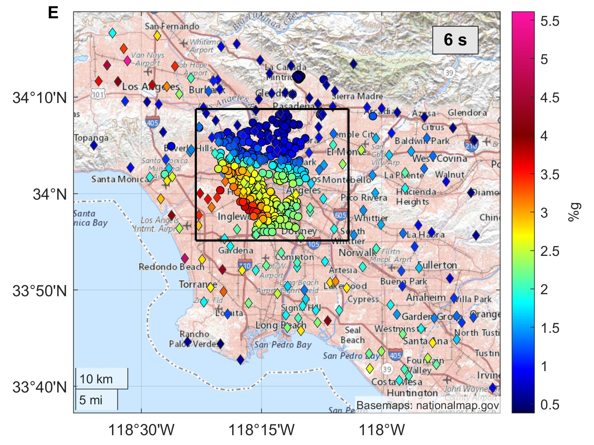
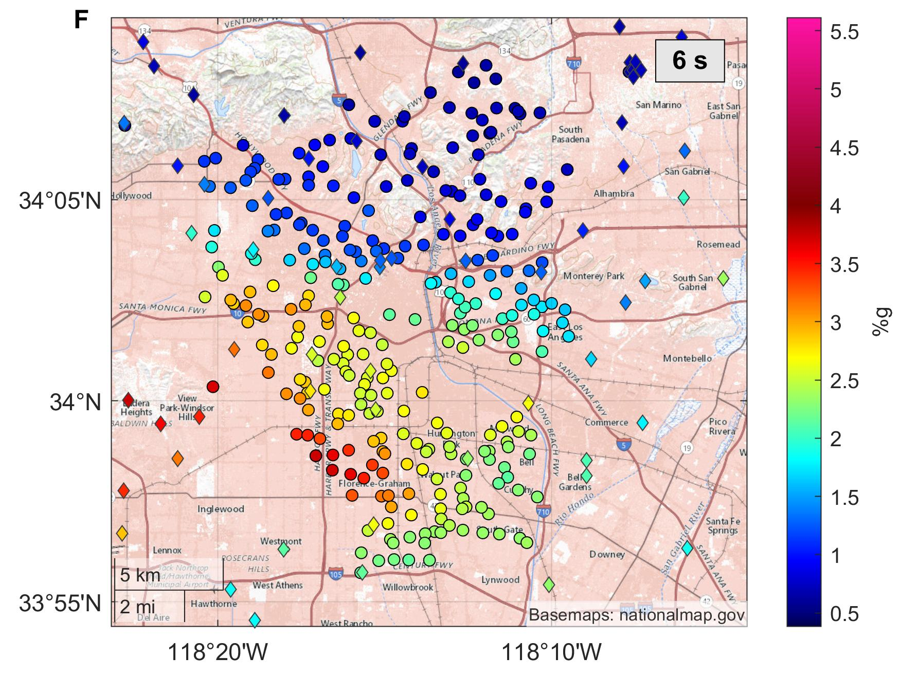

Los Angeles Downtown Highrises Ridgecrest Amplification
We calculate the ground-motion amplification factors in urban Los-Angeles. Acceleration measurements from the main M7.1 2019 Ridgecrest earthquake are used. The figures bellow show maps of the pseudo-spectral accelerations (PSA) for period T=6 s, relative to a reference (hard-rock) site (CI.PASC was selected).

For the Mw7.1 we find the worst locations for buildings with a 6s first natural period to be the San Fernando valley basin and in the west Los Angeles basin. The area into the box is shown in the figure bellow in greater detail.

A lot of the Los Angeles downtown hig-rise buildings could be in a much worse situation experiencing about a 2-times higher amplifications if located just a few blocks to the south.